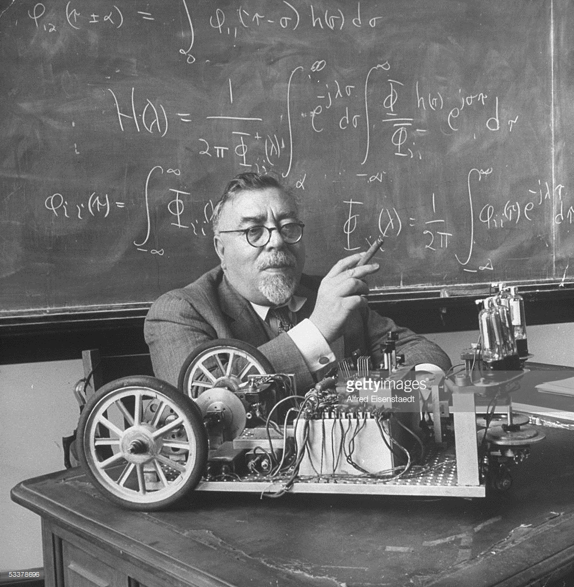
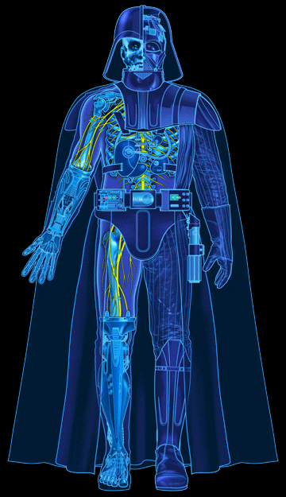

Norbert Wiener Biography
The Father of Cybernetics
Norbert Wiener, (born Nov. 26, 1894, Columbia, Mo., U.S.—died March 18, 1964, Stockholm, Swed.), American mathematician who established the science of cybernetics.
In 1919, he was hired as an instructor by the mathematics department at the Massachusetts Institute of Technology (MIT)
Wiener’s work with guided missile technology and ballistics during World War 2 played a role in his interest in what we now refer to as cybernetics.
His interest lay in the complex electronic systems that allowed the missile to change flight based on the current position and direction it was taking. He identified the feedback principle on the missiles and how it played an important role in every living thing in the world—from plants to animals to humans. The feedback principle is an electronics principle that refers to how a measure of an output signal from a system is fed back into the input of the very same system.
He went on to make huge contributions in the fields of computer science and Artificial Intelligence (AI).
 While it is easy to list the accolades of Norbert Wiener, along with the many theorems and concepts he introduced, it is not a full reflection of his importance. Another reason why Wiener is always going to have an important place in history is due of his influence on scientists in the present and future generations. Many scientists and researchers drew inspiration from Wiener’s work on cybernetics and sophisticated electronics.
The text of this article was adapted or copied from the following sources: